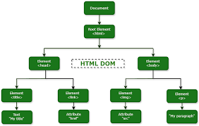

JavaScript and Its Relationship to HTML and CSS
In this blog post i am going to talk about the relationship that HMTL and CSS have with JavaScript
I start with analogy to describe JavaScript and its relationship to HTML and CSS.
Think of building a car:
- HTML is the body and structure -frame, doors, windows, and seats. It gives the car its shape and layout.
- CSS is the paint job and styling — the colors, the design of the interior. It makes the car look appealing.
- JavaScript is the engine — it makes the car move, respond to input, and function interactively. Without it, the car just sits there.
Together, they create a fully working and visually appealing website — just like a finished car that looks great and drives well.
Explain control flow and loops using an example process from everyday life
We are going to cross a street how that looks relates to control flow and loops
we start by breaking this down into steps
- Look both left and right
- If clear then we start to cross
- if you are unable you wait for the cars or obstruction to move
- while you wait you keep checking to make sure its safe to cross
- Once it clear cross the road
the control flow in this is checking to make sure its clear and no cars are comming then you can cross
The Loop is constantly looking left and right untill condition of crossing has been met
Describe what the DOM is and an example of how you might interact with it.
The DOM known as Document Object Model is a programming interface that javascript uses access and manage a documents structure. The DOM looks like a tree structure if you think of a family tree that is how the strucure is made up
Explain the difference between accessing data from arrays and objects.
Accessing data from an array uses numbers 0 - X (Programmers start counting from 0 not 1)
This is how you would remove the engine from this array
Accessing data from a Object is slightly different as it uses Keys instead of numbers
to pull the information form this Object you would use to below
Explain what functions are and why they are helpful.
Functions are a important part of javascript they are a block of code that helps preform a specific task
what we have here is a function that is saying when greet is used it should return hello, world!
these are helpful because if you need to be able figure out something like adding money or Counting a list of cars the function can enable you to do it all at once instead off writing out the calculations over and over again